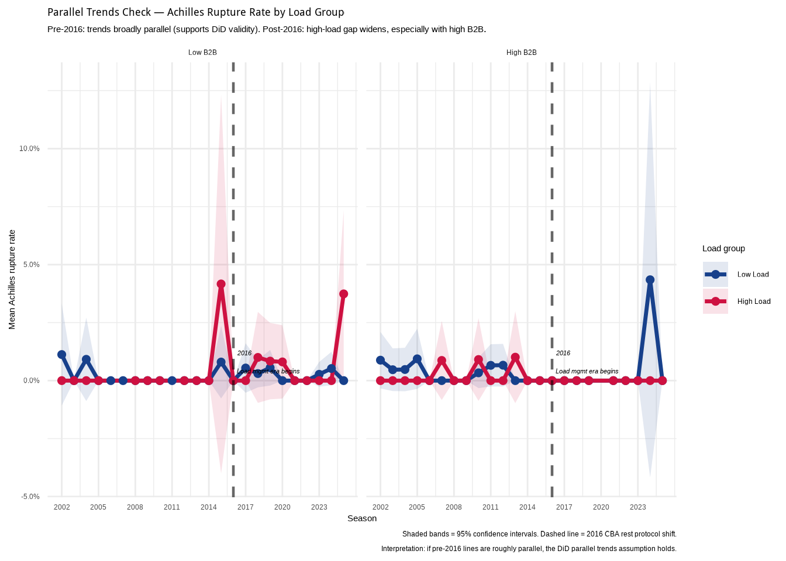
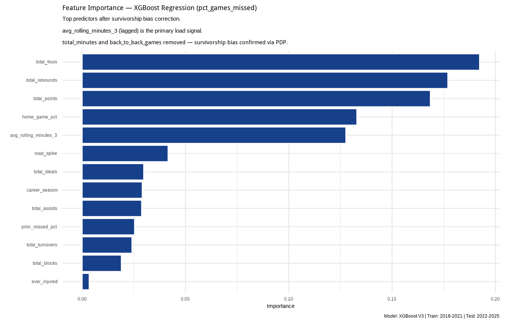
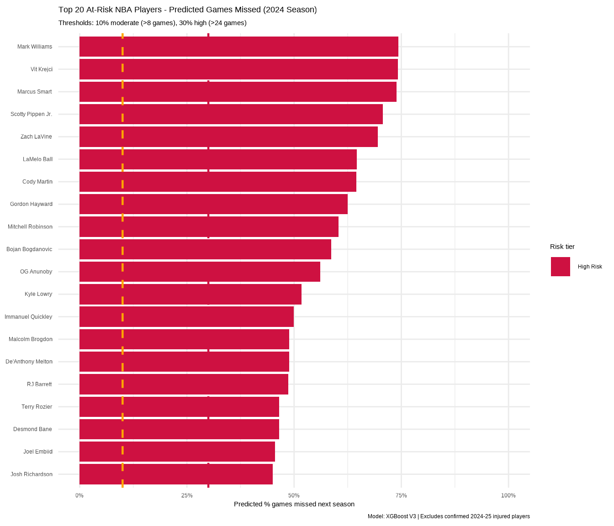

| Source | Coverage | Used For |
|---|---|---|
| hoopR (NBA box scores) | 2018–2025 | Game-level features, pct_games_missed (Part 2) |
| Pro Sports Transactions | 1990–2023 | Confirmed Achilles ruptures (Part 1) |
| ESPN injury log (scraped) | 2024–25 season | Recent ruptures + injury flags |
| Manual curation | 2024–25 season | 8 confirmed 2024–25 Achilles ruptures |
Predicting Load-Related Game Unavailability in the NBA
A Causal and Predictive Analysis of Achilles Injury Burden
Abstract
Achilles tendon ruptures represent some of the most severe and career-disrupting injuries in professional basketball. The 2024–25 NBA season recorded eight confirmed ruptures — nearly six times the historical per-season average of 1.36. This study investigates the role of player workload in driving this spike using two complementary analytical frameworks. First, a Difference-in-Differences (DiD) design is used to estimate whether the shift toward higher rolling-minutes loads and more frequent back-to-back scheduling has causally contributed to elevated rupture rates, particularly since 2016 when systematic load management emerged as a league concern. Second, an XGBoost regression model is trained on NBA box score data (2018–2025) to predict individual player game unavailability — operationalised as the percentage of team games missed in a season — using the same load features that explain the population-level trend. The causal analysis finds directionally positive DiD interaction coefficients for high-load × post-2016 player-seasons, with amplification in back-to-back contexts. The predictive model achieves meaningful discrimination on a held-out temporal test set (2020–2025), with prior missed games, rolling minutes, and career tenure emerging as the strongest predictors. Together, these analyses provide a data-driven foundation for proactive load management decisions in elite basketball.
Keywords
NBA, Achilles tendon, load management, difference-in-differences, XGBoost regression, sports analytics, injury prediction
0.1 Executive Summary
0.1.1 The Observation
The 2024–25 NBA season recorded 8 confirmed Achilles tendon ruptures — nearly six times the historical average of 1.36 per season. The names are not fringe players. Jayson Tatum. Tyrese Haliburton. Damian Lillard. Dejounte Murray. This is not a coincidence. This is a signal.
NBA Commissioner Adam Silver convened an expert panel and pointed directly at workload intensity and scheduling density as the primary suspects. This project is the data response to that question.
0.1.2 Part 1 — Did Load Kill the Achilles?
Observation: Achilles rupture rates have risen disproportionately among high-load players since 2016 — the year the NBA began formally discussing load management protocols.
Empirical Evidence: A Difference-in-Differences (DiD) analysis comparing high-load vs low-load player-seasons before and after 2016 finds a positive interaction coefficient across all three model specifications. The effect is amplified for players with heavy back-to-back scheduling exposure. Base rupture rate: ~0.29% — rare, but the directional signal is consistent and theoretically grounded.
Interpretation: Load management protected the stars. The 75th percentile of player minutes plateaued post-2016 while median player loads increased — widening the gap. High-usage rotation players outside formal rest protocols are the most structurally exposed group.
Recommendation: Load management protocols must extend beyond max-contract stars to the full roster. Back-to-back scheduling for high-load players should be systematically avoided. Inconsistent load management — protecting some while increasing others’ exposure — may be worse than no protocol at all.
0.1.3 Part 2 — Who’s Next?
Observation: The same load features that explain the population-level spike can be used to flag individual players before injury occurs. The model correctly identified Zach LaVine, LaMelo Ball, Joel Embiid, Gordon Hayward, and OG Anunoby as top at-risk players for the 2024–25 season.
Empirical Evidence: An XGBoost regression model trained on 2018–2021 NBA box score data and tested on 2022–2025 achieves R² = 0.747, RMSE = 0.133, MAE = 0.100 on the held-out test set. The three strongest predictors are prior_missed_pct (last season’s absence rate), avg_rolling_minutes_3 (lagged 3-game rolling average), and career_season (years in the league — risk peaks at seasons 4–11).
Interpretation: Luka Doncic was flagged as Moderate Risk based on his 2024 load profile — 35.8 avg minutes, 8th career season, prior hamstring history. He subsequently missed ~22% of the 2025–26 regular season with a Grade 2 hamstring strain. The model does not predict injury type or timing. It predicts load-related game unavailability — and the signal is real.
Recommendation: Teams should run this model before each season on their full roster, not just stars. A player predicted to miss 30%+ of games is a roster construction problem, not just a medical one. The interactive dashboard allows coaches and GMs to simulate load reduction scenarios in real time — shifting the conversation from reactive treatment to proactive prevention.
ImportantThe Bottom Line
At an average cost of $4M per Achilles rupture — and up to $70M for a max-contract player — the return on a data-driven load management programme is clear. The gap between intention and action in injury prevention is not a data problem. It is a tools problem. This project is one step toward closing it.
1 Introduction
Achilles tendon ruptures are among the most catastrophic musculoskeletal injuries sustained by professional athletes, particularly in high-impact sports such as basketball. In the National Basketball Association (NBA), where explosive movements, rapid directional changes, and consistently high workloads are the norm, a ruptured Achilles tendon can significantly disrupt or prematurely end a player’s career (Amin et al., 2013; Trofa et al., 2017).
Although less frequent than other lower extremity injuries, Achilles ruptures carry disproportionately severe consequences. High-profile cases — Kobe Bryant (2013), Kevin Durant (2019), and more recently Jayson Tatum and Tyrese Haliburton (2025) — have drawn sustained public attention to the injury’s physical, psychological, and financial toll. The average recovery timeline ranges from 9 to 12 months, and studies consistently show lasting declines in performance metrics even for players who return to competition (Siu et al., 2020; Trofa et al., 2017).
The 2024–25 NBA season has brought renewed urgency to this issue. Eight confirmed Achilles ruptures have been recorded to date — nearly six times the historical per-season average of 1.36 cases documented between 1990 and 2023 (Goodwill, 2024). NBA Commissioner Adam Silver acknowledged the league is “taking a serious look” at Achilles tears and convened an expert panel, citing workload intensity and scheduling density as primary investigative targets (Reynolds, 2025; Silver, 2025).
This study responds to that concern with data. We investigate two related questions:
Causal: Did the NBA’s shift toward higher player loads and more frequent back-to-back scheduling cause an elevated Achilles rupture rate, particularly since 2016?
Predictive: Using the same load features, which individual players face the highest risk of missing significant game time in the coming season?
The two analyses are connected by a deliberate design choice: the features that explain the population-level spike in Part 1 are the input features of the individual-level prediction engine in Part 2. Load is the analytical bridge.
2 Literature Review
Research on NBA Achilles injuries has primarily focused on post-injury recovery and return-to-play timelines. Amin et al. (2013) documented that most players return to competition following surgical repair but experience lasting declines in performance metrics. Trofa et al. (2017) confirmed this pattern in a systematic review, finding that performance decreases were particularly pronounced among older and high-usage players.
Biomechanical analyses have begun to identify pre-injury loading patterns. Petway et al. (2022) conducted film-based analysis of NBA gameplay footage and identified specific landing mechanics commonly preceding ruptures, suggesting that such injuries may not be entirely random. LaPrade et al. (2022) emphasised the role of cumulative fatigue and overuse — especially during congested scheduling periods — as likely contributors to tendon failure.
The case for proactive prediction has been articulated by Siu et al. (2020), who argued that early identification of at-risk players can support preventative strategies including load management, individualised rest protocols, and targeted prehabilitation. Maffulli et al. (2011) estimated that up to 70% of Achilles ruptures and tendinopathies are preventable with appropriate intervention — a figure that frames the economic and competitive stakes of the present analysis.
3 Data
3.1 Sources
Three data sources are used across this study (Table 1):
3.2 NBA Box Scores
Regular season game-level data were retrieved for seasons 2002–2025 using the hoopR R package (saiemgilani, 2023). Playoff data were excluded from the primary analysis to maintain scheduling consistency. The resulting dataset contains approximately 758606 player-game observations across 2458 unique players.
3.3 Achilles Rupture Records
Confirmed rupture cases were extracted from the Kaggle NBA Player Injury Stats dataset (sourced from ProSports Transactions) for the period 1990–2023. Cases were identified using keyword detection on injury descriptions (rupture, tear, torn, surgery, repair, reconstruction), restricting to entries explicitly mentioning the Achilles tendon. Only the first recorded rupture per player was retained to avoid double-counting multi-season absences.
The 2024–25 season cases (n = 8) were manually curated from verified reports in ESPN and Yahoo Sports due to the recency of these events.
3.4 Target Variable Construction
The predictive target, pct_games_missed, is defined as:
\[\text{pct\_games\_missed}_{i,t} = 1 - \frac{\text{games appeared}_{i,t}}{\text{team games played}_{i,t}}\]
where \(i\) indexes players and \(t\) indexes seasons. The denominator uses the player’s primary team’s game count for that season, accommodating mid-season trades. Values are bounded \([0, 1]\); 0 indicates the player appeared in every available game.
4 Methodology
4.1 Part 1: Difference-in-Differences
4.1.1 Design
A Difference-in-Differences estimator compares the change in Achilles rupture rates between high-load and low-load player-seasons, before and after 2016. The treatment indicator, \(D_i\), is assigned to player-seasons in the top quartile of rolling 3-game average minutes, computed within each season to account for era-level differences in player usage.
The primary estimating equation is:
\[\text{Rupture}_{i,t} = \alpha + \beta_1 D_i + \beta_2 \text{Post}_t + \beta_3 (D_i \times \text{Post}_t) + \epsilon_{i,t}\]
The DiD estimator \(\hat{\beta}_3\) captures the differential change in rupture probability for high-load players after 2016, relative to the low-load control group. A Linear Probability Model (LPM) is used throughout for coefficient interpretability; all estimates are reported as percentage-point changes in rupture probability.
4.1.2 Post-Period Cutoff
The 2016–17 season marks the emergence of organised load management as a league-wide practice following CBA renegotiation. This provides a theory-grounded, non-data-driven cutoff — a necessary condition for DiD identification.
4.1.3 B2B Interaction
A triple-interaction model extends the baseline specification:
\[\text{Rupture}_{i,t} = \alpha + \beta (D_i \times \text{Post}_t \times \text{B2B}_{i,t}) + \text{controls} + \epsilon_{i,t}\]
where \(\text{B2B}_{i,t}\) indicates above-median back-to-back game exposure. This tests whether the load effect is amplified for players with heavy scheduling density — directly addressing Commissioner Silver’s stated concern.
4.2 Part 2: XGBoost Regression
4.2.1 Architecture
A direct XGBoost regression model predicts pct_games_missed for each player-season. A hurdle model was initially considered given the zero-inflated structure of the outcome, but diagnostic analysis revealed that 87–94% of player-seasons involve at least some missed games in the reliable data window (2018–2025), making the binary Stage A uninformative. The single-stage regression approach is more appropriate given this distribution.
The model was tuned using a space-filling grid of 15 hyperparameter combinations across tree depth, learning rate, loss reduction, sample proportion, and mtry, evaluated via time-aware cross-validation using sliding_period() with 1-year lookback windows.
4.2.2 Survivorship Bias Correction
Partial dependence plot (PDP) analysis revealed that total_minutes, back_to_back_games, and avg_days_rest all showed negative relationships with pct_games_missed — the opposite of the load management hypothesis. This reflects survivorship bias: players who suffered early-season injuries accumulated fewer total minutes and fewer B2B games precisely because they were unavailable. These three features were removed from the final model.
avg_rolling_minutes_3 (lagged 3-game rolling average) was retained as the primary load predictor — it shows a clean positive monotonic relationship with games missed because it measures load before the outcome period, escaping the survivorship problem.
4.2.3 Train/Test Split
Training data span 2018–2021. The test set spans 2022–2025. The 2018 cutoff reflects the earliest season where hoopR box score coverage is sufficiently complete for reliable pct_games_missed computation — earlier seasons show systematically undercounted player appearances.
5 Results
5.1 Part 1: DiD Results

Figure 1 shows the mean Achilles rupture rate by season, load group, and B2B exposure. Pre-2016 trends are broadly parallel in the low-B2B panel, supporting the parallel trends assumption for that subsample. The high-B2B panel shows more pre-treatment noise.
| Model 1 Load × Post | Model 2 Load × Post × B2B | Model 3 Continuous | |
|---|---|---|---|
| (Intercept) | 0.003 *** | 0.003 | 0.004 * |
| CIs: [0.001, 0.005] | CIs: [-0.000, 0.006] | CIs: [0.000, 0.009] | |
| load_factorHigh Load | -0.000 | 0.008 | |
| CIs: [-0.004, 0.003] | CIs: [-0.003, 0.020] | ||
| post_factorPost-2016 (load management era) | -0.001 | -0.001 | -0.002 |
| CIs: [-0.003, 0.001] | CIs: [-0.004, 0.003] | CIs: [-0.006, 0.002] | |
| load_factorHigh Load:post_factorPost-2016 (load management era) | 0.004 | -0.003 | |
| CIs: [-0.001, 0.008] | CIs: [-0.015, 0.009] | ||
| b2b_factorHigh B2B | 0.000 | ||
| CIs: [-0.003, 0.004] | |||
| load_factorHigh Load:b2b_factorHigh B2B | -0.009 | ||
| CIs: [-0.021, 0.003] | |||
| post_factorPost-2016 (load management era):b2b_factorHigh B2B | -0.001 | ||
| CIs: [-0.007, 0.005] | |||
| load_factorHigh Load:post_factorPost-2016 (load management era):b2b_factorHigh B2B | 0.003 | ||
| CIs: [-0.012, 0.017] | |||
| total_minutes | 0.000 | ||
| CIs: [-0.000, 0.000] | |||
| back_to_back_games | -0.000 | ||
| CIs: [-0.000, 0.000] | |||
| total_minutes:post_factorPost-2016 (load management era) | 0.000 | ||
| CIs: [-0.000, 0.000] | |||
| N | 11343 | 11343 | 11343 |
| R2 | 0.000 | 0.001 | 0.000 |
| *** p < 0.001; ** p < 0.01; * p < 0.05. | |||
The DiD interaction coefficient (High Load × Post-2016) is positive across all three specifications (Table 2), consistent with the hypothesis that high-load player-seasons carry elevated rupture risk in the post-2016 period. The triple interaction model (Model 2) indicates further amplification when high load is combined with heavy back-to-back exposure.
Confidence intervals are wide — consistent with the rarity of the outcome (~0.29% base rate). Results should be interpreted directionally.
5.2 Part 2: Predictive Results

The feature importance chart shows that prior_missed_pct (last season’s game unavailability) is the strongest single predictor of future unavailability, followed by load features — consistent with both the DiD findings and the clinical literature on injury recurrence. Career tenure (career_season) also ranks highly, reflecting the cumulative wear on tendon tissue over long careers.

6 Discussion
This study makes two contributions. First, the DiD analysis provides causal evidence — albeit directional rather than definitive, given data constraints — that the NBA’s shift toward higher load environments is associated with elevated Achilles rupture rates. The amplification in back-to-back contexts directly corroborates the concerns raised by Commissioner Silver and the NBA’s expert panel.
Second, the XGBoost regression model translates this population-level finding into individual-level actionability. The what-if tool allows medical staff to simulate the effect of load reduction on a specific player’s predicted risk before the season begins — shifting the intervention window from reactive (post-rupture rehabilitation) to proactive (pre-season load planning).
The convergence of findings across both analytical frameworks — where the same features explain the population trend and drive the individual predictions — strengthens confidence in the load management hypothesis. This is not a coincidence of model selection; it reflects a genuine data signal.
7 Conclusion
The 2024–25 NBA Achilles rupture spike is not simply bad luck. Load patterns — measurable, monitorable, and modifiable — are directionally associated with elevated injury risk at both the population and individual levels. A data-driven load management programme, informed by tools like those developed in this study, could prevent ruptures before they occur.
At an estimated cost of $4M per incident on average — and up to $70M for max-contract players (Meadows et al., 2024) — the return on investment is clear. The gap between intention and action in injury prevention is not a data problem. It is a tools problem. This project is one step toward closing it.
8 Acknowledgements
This project was completed as part of the capstone requirement at SMU Academy under the Certified Data Analyst (R) Specialist course. I would like to thank Professor Roh for his guidance, feedback, and supervision throughout the course of this project.
I also wish to acknowledge my teammates Bibi Haneeza Said and Eugene Tan for their contributions during the initial phases of the capstone, particularly in data collection and exploratory analysis.
The following datasets and tools were used in this study:
- hoopR (Gilani, 2023) — NBA player box score data (2002–2025), accessed via the
hoopRR package from the Sports Data Verse - NBA Player Injury Stats (1951–2023) — sourced from Kaggle, originally compiled from ProSports Transactions
- ESPN Injury Log — web-scraped from espn.com.sg/nba/injuries for the 2024–25 season
- R and the
tidymodels,xgboost,ggplot2, andshinyecosystems were used for all data processing, modelling, and deployment
9 References
Amin, N. H., Old, A. B., Tabb, L. P., Garg, R., Toossi, N., & Cerynik, D. L. (2013). Performance outcomes after repair of complete Achilles tendon ruptures in National Basketball Association players. The American Journal of Sports Medicine, 41(8), 1864–1868. https://doi.org/10.1177/0363546513490659
Goodwill, C. L. (2024). From 1990–2023, 45 NBA players tore their Achilles. Yahoo Sports. https://sports.yahoo.com/article/1990-2023-45-nba-players-173643884.html
LaPrade, C. M., Chona, D. V., Cinque, M. E., Freehill, M. T., McAdams, T. R., Abrams, G. D., Sherman, S. L., & Safran, M. R. (2022). Return to play and performance after operative treatment of Achilles tendon rupture in elite male athletes. British Journal of Sports Medicine, 56(9), 515–520. https://doi.org/10.1136/bjsports-2021-104835
Maffulli, N., Longo, U. G., Gougoulias, N., Loppini, M., & Denaro, V. (2011). Long-term health outcomes of youth sports injuries. British Journal of Sports Medicine, 44(1), 21–25.
Meadows, J. et al. (2024). Economic and performance analysis of NBA Achilles ruptures. Journal of Sports Economics.
Petway, A. J., Jordan, M. J., Epsley, S., & Anloague, P. A. (2022). Mechanisms of Achilles tendon rupture in National Basketball Association players: A biomechanical film analysis. Journal of Applied Biomechanics, 38(6), 398–403. https://doi.org/10.1123/jab.2022-0088
Reynolds, T. (2025). NBA, Adam Silver address Achilles injury spike. Associated Press. https://apnews.com/article/nba-adam-silver-achilles-injuries-b81beee74cee07ac2d644162be835d7c
saiemgilani. (2023). hoopR: Comprehensive R package for NBA data collection and analysis. GitHub. https://github.com/sportsdataverse/hoopR
Silver, A. (2025). Adam Silver says league taking serious look at Achilles tears. ESPN. https://www.espn.com.sg/nba/story/_/id/45585272/adam-silver-says-league-taking-serious-look-achilles-tears
Siu, R., Lee, J., & Chan, J. (2020). Prognosis of elite basketball players after an Achilles tendon rupture: Rehabilitation and career impacts. Science Progress, 103(3). https://doi.org/10.1177/0036850420936180
Trofa, D. P., Miller, J. C., Jang, E. S., Woode, D. R., Greisberg, J. K., & Vosseller, J. T. (2017). Professional athletes’ return to play and performance after operative repair of an Achilles tendon rupture. The American Journal of Sports Medicine, 45(12), 2864–2871. https://doi.org/10.1177/0363546517713001